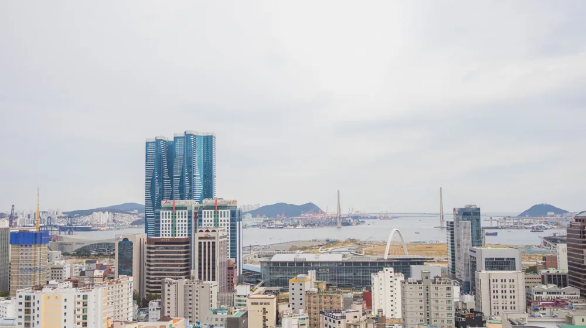

유정복, 갑자기 검색어 1위? 단순한 이름 뒤 숨겨진 충격 반전!
사진: 정규송 Nui MALAMA / Pexels (무료 이미지, 출처 표기)
이름 석 자, 대한민국을 흔들다: 유정복, 그가 대체 누구이길래?

혹시 오늘 아침, 포털 사이트 검색창에서 낯익으면서도 낯선 이름 석 자를 발견하고 고개를 갸웃하셨나요? '유정복'. 평범해 보이던 이 이름이 오늘 대한민국 인터넷을 그야말로 발칵 뒤집어 놓았습니다. 단순한 인물 검색이 아닌, 무언가 심상치 않은 거대한 물결이 이 이름 뒤에 숨어 있다는 사실! 과연 그 이면에는 어떤 사연이 숨어 있을까요? 지금부터 그 미스터리를 파헤쳐 보겠습니다.
유정복 시장님은 현재 인천광역시를 이끄는 수장입니다. 이미 여러 차례 국회의원과 장관, 그리고 인천시장을 역임하며 굵직한 행정 경험을 쌓아온 베테랑 정치인이죠. 하지만 오늘 그의 이름이 검색어 1위에 오르며 뜨겁게 타오른 것은 단순히 그의 이력 때문이 아닙니다. 바로 그의 이름 석 자 뒤에 숨겨진, 인천과 대한민국의 미래를 뒤흔들 거대한 '계획' 때문입니다.
단순한 시장이 아니다! 검색어 1위의 진짜 시발점은?
어느 날 갑자기, 한 도시의 시장 이름이 전국적인 핫이슈로 떠오른다는 것은 결코 우연이 아닙니다. 그 뒤에는 대중의 폭발적인 관심을 끌 만한 중대한 발표나 사건이 있기 마련이죠. 유정복 시장의 이번 검색어 급상승 뒤에는 바로 인천을 '동북아시아의 새로운 허브'로 만들겠다는 야심 찬 비전, 즉 '제물포 르네상스' 프로젝트와 송도에 조성될 '바이오∙헬스케어 혁신 클러스터' 발표가 있었습니다.
그동안 인천은 대한민국 경제의 중요한 축이었지만, 송도, 청라, 영종 등 신도시 개발에 집중하며 구도심 활성화에 대한 갈증이 깊었습니다. 유정복 시장의 '제물포 르네상스'는 바로 이 오래된 갈증을 해소하고, 인천의 잠재력을 폭발시킬 비장의 카드였던 것입니다. 여기에 세계적인 바이오 기업과 연구기관을 유치하여 송도를 명실상부한 글로벌 바이오 허브로 만들겠다는 구상까지 더해지며, 단순한 지역 이슈를 넘어 전국민의 이목을 집중시킨 것이죠. 과연 이 프로젝트가 대한민국 경제에 어떤 파장을 불러올지, 기대감이 증폭되고 있습니다.
인천의 미래를 바꿀 '메가 프로젝트', 그 속사정은?
유정복 시장이 던진 이 '메가 프로젝트'는 단순한 개발 계획을 넘어섭니다. 인천 구도심과 연안 부두 일대를 과거의 영광을 되찾는 동시에, 미래 산업의 중심으로 재편하겠다는 복합적인 구상이죠. 그 핵심 내용을 표로 정리하면 다음과 같습니다.
이 계획들은 인천이 가진 항만, 공항, 경제자유구역이라는 독보적인 인프라를 최대한 활용하여, 동북아시아를 넘어 세계적인 거점 도시로 도약하려는 의지를 담고 있습니다. 특히 단순한 물리적 개발을 넘어, 문화와 역사를 보존하고 첨단 산업을 육성하겠다는 균형 잡힌 시각이 돋보입니다.
논란과 기대, 유정복 시장의 승부수는 통할까?
물론 이러한 대규모 프로젝트에는 언제나 기대만큼이나 우려의 목소리도 따르기 마련입니다. 막대한 예산 투입에 대한 재정 건전성 문제, 원도심 개발 과정에서 발생할 수 있는 젠트리피케이션 논란, 그리고 환경 문제 등 해결해야 할 과제들도 산적해 있습니다. 하지만 유정복 시장은 이러한 우려들을 불식시키기 위해 민간 투자 유치와 중앙정부와의 긴밀한 협력을 강조하며 강력한 추진 의지를 보이고 있습니다.
인천은 그동안 수도권의 중요한 배후 도시 역할을 해왔지만, 이제는 대한민국을 넘어 세계 무대에서 독자적인 존재감을 드러내려 하고 있습니다. 유정복 시장의 이러한 '승부수'가 과연 인천을 새로운 번영의 시대로 이끌 수 있을지, 많은 이들이 숨죽여 지켜보고 있습니다.
'유정복 효과'가 가져올 놀라운 변화, 우리의 삶은 어떻게 달라질까?
그렇다면 이러한 '유정복 효과'는 우리의 삶에 어떤 영향을 미치게 될까요? 먼저, 인천 지역 주민들에게는 주거 환경 개선과 신규 일자리 창출이라는 직접적인 혜택이 기대됩니다. 낙후되었던 구도심이 활력을 되찾고, 첨단 산업 클러스터를 통해 양질의 일자리가 대거 창출된다면, 인천은 젊은 인구가 유입되는 역동적인 도시로 변모할 것입니다.
나아가 대한민국의 바이오 산업 경쟁력 강화에도 크게 기여할 것입니다. 세계적인 기업들이 인천에 모여 기술 개발에 힘쓴다면, 이는 곧 국가 전체의 성장 동력이 되고, 국민들의 건강과 삶의 질 향상으로 이어질 수 있습니다. 인천이 단순한 수도권 위성 도시를 넘어, 독자적인 경제 성장 엔진을 갖춘 글로벌 명품 도시로 발돋움할 가능성을 보여주고 있는 것입니다.
결론: 단순한 트렌드를 넘어, 미래를 주시해야 할 이유
오늘 '유정복'이라는 이름이 검색어 1위에 오르며 뜨거운 감자가 된 것은, 단순한 인물 이슈를 넘어선 거대한 미래 변화의 예고편일지도 모릅니다. 인천의 패러다임을 바꿀 메가 프로젝트가 성공적으로 진행된다면, 이는 비단 인천뿐 아니라 대한민국 전체의 지형을 변화시킬 잠재력을 가지고 있습니다.
앞으로 유정복 시장의 행보와 인천의 변화에 지속적인 관심과 기대를 가져보는 것은 어떨까요? 어쩌면 우리의 상상을 초월하는 놀라운 미래가 그 안에 숨어 있을지도 모릅니다. 마치 한 편의 드라마처럼 펼쳐질 인천의 새로운 역사, 그 중심에 '유정복'이라는 이름이 다시금 우뚝 설 날을 기대해봅니다.
🔗 이 글도 함께 보면 좋아요: 조혜련, 갑자기 왜 난리일까? 베테랑 방송인의 놀라운 반전 매력